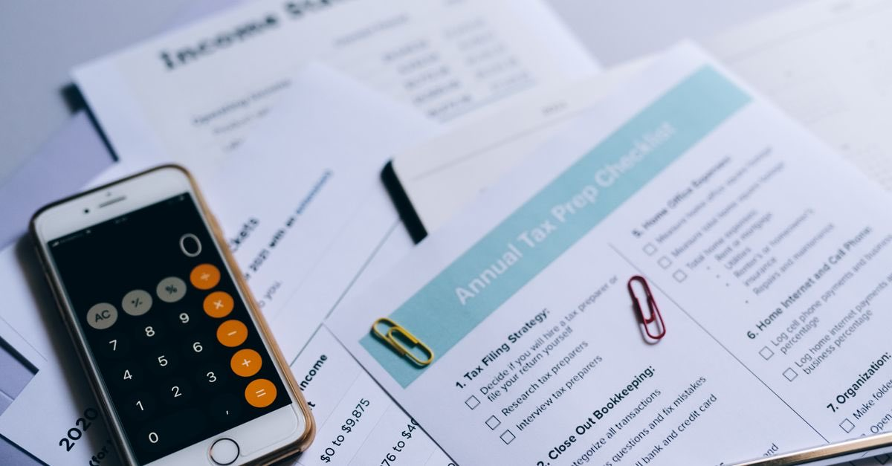

Deprem sonrası vergi: mücbir sebep, terkin ve yıkılan binanın emlak vergisi
Deprem mücbir sebep hâlidir ve süreler işlemez. Yıkılan bina için emlak vergisi mükellefiyeti ise çoğu zaman bildirime bağlı olarak sona erer.

Deprem sonrasında en son akla gelen konu vergidir; oysa burada hem kaçırılan haklar hem de gereksiz yere ödenen tutarlar vardır. Üç başlık bilinmeli: mücbir sebep, terkin ve emlak vergisi mükellefiyeti.
1. Mücbir sebep: süreler işlemez
Yangın, yer sarsıntısı (deprem) ve su basması gibi afetler, vergi ödevlerinin yerine getirilmesine engel olan mücbir sebep hâlleri arasında sayılmıştır. Mücbir sebep süresince süreler işlemez.
Uygulamada Hazine ve Maliye Bakanlığı, afet bölgeleri için mücbir sebep hâli ilan eder ve bu ilanla beyanname verme, bildirim ve ödeme süreleri durur. 2023 depremlerinin ardından on bir il için deprem tarihinden itibaren mücbir sebep hâli ilan edilmiştir.
Mücbir sebep ilanı kendiliğinden süresiz değildir; kapsamı ve bitiş tarihi idari kararla belirlenir. Kendi durumunuz için güncel ilanı vergi dairesinden veya Gelir İdaresi Başkanlığı duyurularından teyit edin.
2. Terkin: borcun silinmesi
Yangın, yer sarsıntısı, yer kayması, su basması, kuraklık gibi afetler yüzünden varlıklarının veya mahsullerinin en az üçte birini kaybedenlerin, afete uğrayan gelir kaynaklarıyla ilgili kamu borçları Cumhurbaşkanı kararıyla kısmen veya tamamen terkin edilebilir.
Terkin kendiliğinden uygulanmaz; kapsam ve koşullar ilgili karara bağlıdır. Zararınızı belgeleyen her şeyi (hasar tespit raporu, fotoğraflar, sigorta dosyası, iş yeri kayıtları) saklayın.
3. Emlak vergisi: en çok para kaybettiren üç kural
Mükellefiyetin sona ermesi
Yanan, yıkılan veya tamamen kullanılmaz hâle gelen binalardan dolayı mükellefiyet, olayın vuku bulduğu tarihi takip eden taksitten itibaren sona erer.
Bildirim şartı
Oturulması ve kullanılması yasaklanan binaların vergileri, mükellefin durumu vergi dairesine bildirmesi veya vergi dairesince re'sen tespiti üzerine, bu hâl devam ettiği sürece alınmaz. Bildirim yapılmazsa tahakkuk devam eder — yıkılmış bir bina için yıllarca vergi ödemeye devam eden çok sayıda kişi vardır.
Yeniden inşa muafiyeti
Afet nedeniyle binası yıkılan veya kullanılmaz hâle gelenlerin, afetin vuku bulduğu tarihten itibaren belirli bir süre içinde afet yerinde veya kamu kuruluşlarınca gösterilen yerlerde inşa ettikleri binalar için muafiyet öngörülmüştür.
Vergi dairesine ne bildirilir?
- Binanın açık adresi, ada/parsel ve bağımsız bölüm bilgisi.
- Hasar tespit sonucunuz (ağır hasarlı / yıkık) ve varsa yıkım kararı.
- Binanın kullanılamaz hâle geldiği tarih.
- Talebiniz: mükellefiyetin sona erdirilmesi veya verginin alınmaması.
Dilekçenizi elden verirken evrak kaydı alın; posta ile gönderiyorsanız iadeli taahhütlü kullanın.
İş yeri ve esnaf için ek başlıklar
İş yeri hasarı, konut hasarından ayrı bir hak kümesi doğurur ve neredeyse hiç anlatılmaz. Vergi mücbir sebep hükümleri iş yerleri için de geçerlidir; ayrıca sosyal güvenlik prim ertelemeleri gündeme gelebilir.
2023 depremlerinden sonra KOSGEB eliyle uygulanan borç silme, acil destek kredisi, konteyner (yaşam alanı) desteği ve geri ödemesiz onarım destekleri kalıcı mevzuat değildir; döneme özgü program kararlarıdır. Yeni bir afette aynı desteklerin uygulanacağı garanti edilemez.
Kredi ve borç ertelemeleri: hak değil, emsal
2023'te bankacılık düzenlemeleriyle tüketici ve taşıt kredilerinde ödeme ertelemesi, kredi kartı borçlarında ödemesiz dönem ve taksitlendirme süresinin uzatılması gibi esneklikler getirilmiştir. Bunların belirli bir dönem için alınmış kararlar olduğunu, kalıcı bir hak oluşturmadığını bilerek hareket edin.
Neden bu kadar vurguluyoruz? Kullanıcıya var olmayan bir hak vaat etmek, bilgi vermemekten daha zararlıdır. Geçmiş afette uygulanan bir destek, sizin bugünkü hakkınız değildir; başvurmadan önce güncel duyuruyu teyit edin.
Vefat hâlinde vergi boyutu
Yakınını kaybedenler için miras ve intikal işlemlerinin de vergi boyutu vardır. 2023 depremlerinde vefat edenlerin bireysel emeklilik birikimlerinin mirasçılara intikalinin veraset ve intikal vergisinden istisna tutulduğu belirtilmektedir. Bu tür istisnalar dönemsel olabilir; başvuru öncesinde vergi dairesinden teyit alın.
İlgili yazı: ölüm karinesi, miras ve sigorta.
Kira geliri ve tapu işlemleri
Konutu hasar gördüğü için kiraya veremeyen mülk sahipleri, gelir vergisi beyanında bu durumu göz ardı edebiliyor. Elde edilmeyen bir gelir beyan edilmez; ancak hasar ve kullanılamama durumunun belgelenmesi gerekir. Hasar tespit raporu, tahliye kararı ve abonelik kapatma kayıtlarını saklayın.
Aynı şekilde, yıkılan binanın arsası üzerindeki tapu işlemlerinde de vergi boyutu doğar. Kat mülkiyeti sona erip arsa payı oranında paylı mülkiyete dönüldüğünde, taşınmazın vergi kayıtları da değişir.
Kısa kontrol listesi
- Bulunduğunuz il için mücbir sebep ilanı var mı, kapsamı ve süresi ne?
- Yıkılan/kullanılamaz hâle gelen bina için vergi dairesine bildirim yapıldı mı?
- Emlak vergisi tahakkuku hâlâ devam ediyor mu? e-Devlet veya belediyeden kontrol edin.
- Terkin veya destek programlarından yararlanma koşullarını taşıyor musunuz?
- Yeniden inşa edecekseniz muafiyet süresi ve şartları nedir?
Vergi konuları somut olaya göre değişir; kararınızı vermeden önce bağlı olduğunuz vergi dairesinden veya bir mali müşavirden teyit alın.
Kanuni dayanak
| Mevzuat | Ne diyor |
|---|---|
| 213 sayılı Vergi Usul Kanunu m.13 | Mücbir sebep hâlleri |
| 213 sayılı Vergi Usul Kanunu m.15 | Mücbir sebepte sürelerin işlememesi |
| 213 sayılı Vergi Usul Kanunu m.115 | Afet nedeniyle terkin |
| 1319 sayılı Emlak Vergisi Kanunu | Mükellefiyetin sona ermesi ve muafiyet |
Sık sorulanlar
Deprem vergi hukukunda mücbir sebep sayılır mı?
Evet. Yangın, yer sarsıntısı ve su basması gibi afetler, vergi ödevlerinin yerine getirilmesine engel olan mücbir sebep hâlleri arasında sayılmıştır. Mücbir sebep süresince süreler işlemez.
Yıkılan bina için emlak vergisi ödemeye devam eder miyim?
Yanan, yıkılan veya tamamen kullanılmaz hâle gelen binalarda mükellefiyetin, olayın vuku bulduğu tarihi takip eden taksitten itibaren sona erdiği belirtilmektedir. Ancak durumun vergi dairesine bildirilmesi gerekir.
Bildirim yapmazsam ne olur?
Oturulması ve kullanılması yasaklanan binaların vergileri, mükellefin durumu vergi dairesine bildirmesi veya idarece re'sen tespiti üzerine alınmaz. Bildirim yapılmazsa tahakkuk devam edebilir.
Deprem nedeniyle vergi borcu silinebilir mi?
Afetler yüzünden varlıklarının veya mahsullerinin en az üçte birini kaybedenlerin, afete uğrayan gelir kaynaklarıyla ilgili kamu borçlarının Cumhurbaşkanı kararıyla kısmen veya tamamen terkin edilebileceği düzenlenmiştir.
Yeniden inşa edilen bina için muafiyet var mı?
Afet nedeniyle binası yıkılan veya kullanılmaz hâle gelenlerin, afetin vuku bulduğu tarihten itibaren belirli bir süre içinde inşa ettikleri binalar için muafiyet öngörüldüğü belirtilmektedir.
Bu konuyla ilgili araç
Hak taramaDurumunuza uyan hakları dayanağıyla listeleyin.Süre takvimiBaşvuru sürelerinizi tek ekranda görün.İlgili rehberler
 Kira ve mülkiyet
Bina yıkıldıktan sonra mülkiyet ne oluyor? Kat mülkiyeti, arsa payı ve yeniden inşa
Ana yapı tamamen yıkılırsa kat mülkiyeti sona erer; geriye arsa payı oranında paylı mülkiyet kalır. Yeni dairenizin büyüklüğünü bu oran belirler.
Kira ve mülkiyet
Bina yıkıldıktan sonra mülkiyet ne oluyor? Kat mülkiyeti, arsa payı ve yeniden inşa
Ana yapı tamamen yıkılırsa kat mülkiyeti sona erer; geriye arsa payı oranında paylı mülkiyet kalır. Yeni dairenizin büyüklüğünü bu oran belirler.
 Devlet destekleri
Hak sahipliği başvurusu: iki aylık süre, taahhütname ve faizsiz borçlandırma
Binası yıkılan veya ağır hasarlı malikler devletten konut ya da faizsiz kredi isteyebilir. Başvuru süresi ilan tarihinden itibaren iki aydır.
Devlet destekleri
Hak sahipliği başvurusu: iki aylık süre, taahhütname ve faizsiz borçlandırma
Binası yıkılan veya ağır hasarlı malikler devletten konut ya da faizsiz kredi isteyebilir. Başvuru süresi ilan tarihinden itibaren iki aydır.
 Hasar tespiti ve itiraz
Hasar tespit raporuna itiraz nasıl yapılır? 30 günlük süre ve dilekçe
Binanızın hasar derecesi yanlış belirlendiyse itiraz süresi ilan tarihinden itibaren 30 gün. Kaçarsa idari itiraz hakkı tümüyle biter.
Hasar tespiti ve itiraz
Hasar tespit raporuna itiraz nasıl yapılır? 30 günlük süre ve dilekçe
Binanızın hasar derecesi yanlış belirlendiyse itiraz süresi ilan tarihinden itibaren 30 gün. Kaçarsa idari itiraz hakkı tümüyle biter.
 Hasar tespiti ve itiraz
Depremden sonra ilk 30 gün: hangi hakkın süresi ne zaman doluyor?
Deprem sonrasında kaybedilen hakların çoğu bilinmediği için değil, süresi kaçtığı için kaybediliyor. İşte gün gün yapılması gerekenler.
Hasar tespiti ve itiraz
Depremden sonra ilk 30 gün: hangi hakkın süresi ne zaman doluyor?
Deprem sonrasında kaybedilen hakların çoğu bilinmediği için değil, süresi kaçtığı için kaybediliyor. İşte gün gün yapılması gerekenler.